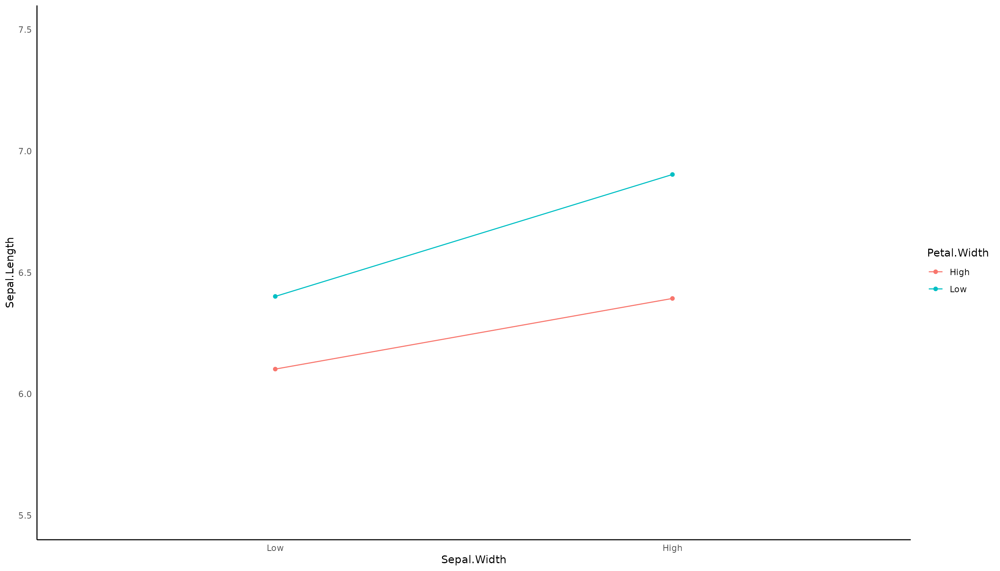

quick-introduction.RmdVersion Note: Up-to-date with v0.3.0
TLDR:
1) It is a beginner-friendly R package for statistical analysis in social science.
2) Tired of manually writing all variables in a model? You can use dplyr::select() syntax for all models
3) Fitting models, plotting, checking goodness of fit, and model assumption violations all in one place.
4) Beautiful and easy-to-read output. Check out this example now.
Support models:
1. Linear regression (i.e., support ANOVA, ANCOVA), generalized linear regression.
2. Linear mixed effect model (or HLM to be more specific), generalized linear mixed effect model.
3. Confirmatory and exploratory factor analysis.
4. Simple mediation analysis.
5. Reliability analysis.
6. Correlation, descriptive statistics (e.g., mean, SD).
At its core, this package allows people to analyze their data with one simple function call. For example, when you are running a linear regression, you need to fit the model, check the goodness of fit (e.g., R2), check the model assumption, and plot the interaction (if the interaction is included). Without this package, you need several packages to do the above steps. Additionally, if you are an R beginner, you probably don’t know where to find all these R packages. This package has done all that work for you, so you can just do everything with one simple function call.
Another good example is CFA. The most common (and probably the only) option to fit a CFA in R is using lavaan. Lavaan has its own unique set of syntax. It is very versatile and powerful, but you do need to spend some time learning it. It may not worth the time for people who just want to run a quick and simple CFA model. In my package, it’s very intuitive with cfa_summary(data, x1:x3), and you get the model summary, the fit measures, and a nice-looking path diagram. The same logic also applies to HLM since lme4 / nlme also has its own set of syntax that you need to learn.
Moreover, I also made fitting the model even simpler by using the dplyr::select syntax. In short, traditionally, if you want to fit a linear regression model, the syntax looks like this lm(y ~ x1 + x2 + x3 + x4 + ... + xn, data). Now, the syntax is much shorter and more intuitive: lm_model(y, x1:xn, data). You can even replace x1:xn with everything(). I also wrote this very short article that teaches people how to use the dplyr::select() syntax (it is not comprehensive, and it is not intended to be).
Finally, I made the output in R much more beautiful and easy to read. The default output from R, to be frank, look ugly. I spent a lot of time making sure it looks good in this package (see below for examples). I am sure that you will see how big the improvement is.
integrated_model_summary is the integrated function for linear regression and generalized linear regression. It will first fit the model using lm_model or glm_model, then it will pass the fitted model object to model_summary which produces model estimates and assumption checks. If interaction terms are included, they will be passed to the relevant interaction_plot function for plotting (the package currently does not support generalized linear regression interaction plotting).
Additionally, you can request assumption_plot and simple_slope (default is FALSE). By requesting assumption_plot, it produces a panel of graphs that allow you to visually inspect the model assumption (in addition to testing it statistically). simple_slope is another powerful way to probe further into the interaction. It shows you the slope estimate at the mean and +1/-1 SD of the mean of the moderator. For example, you hypothesized that social-economic status (SES) moderates the effect of teacher experience on education quality. Then, simple_slope shows you the slope estimate of teacher experience on education quality at +1/-1 SD and the mean level of SES. Additionally, it produces a Johnson-Newman plot that shows you at what level of the moderator that the slope_estimate is predicted to be insignificant.
lm_model_summary(
data = iris,
response_variable = Sepal.Length,
predictor_variable = tidyselect::everything(),
two_way_interaction_factor = c(Sepal.Width, Petal.Width),
model_summary = TRUE,
interaction_plot = TRUE,
assumption_plot = TRUE,
simple_slope = TRUE,
plot_color = TRUE
)
Model Summary
Model Type = Linear regression
Outcome = Sepal.Length
Predictors = Sepal.Width, Petal.Length, Petal.Width, Species
Model Estimates
───────────────────────────────────────────────────────────────────────────────────────
Parameter Coefficient SE t df p 95% CI
───────────────────────────────────────────────────────────────────────────────────────
(Intercept) 1.652 0.434 3.807 143 0.000 *** [ 0.794, 2.510]
Sepal.Width 0.645 0.128 5.023 143 0.000 *** [ 0.391, 0.899]
Petal.Length 0.837 0.068 12.240 143 0.000 *** [ 0.702, 0.972]
Petal.Width 0.220 0.375 0.588 143 0.558 [-0.520, 0.961]
Speciesversicolor -0.770 0.241 -3.196 143 0.002 ** [-1.246, -0.294]
Speciesvirginica -1.110 0.337 -3.296 143 0.001 *** [-1.775, -0.444]
Sepal.Width:Petal.Width -0.159 0.102 -1.560 143 0.121 [-0.360, 0.042]
───────────────────────────────────────────────────────────────────────────────────────
Goodness of Fit
───────────────────────────────────────────────────
AIC BIC R² R²_adjusted RMSE σ
───────────────────────────────────────────────────
78.584 102.669 0.870 0.864 0.298 0.305
───────────────────────────────────────────────────
Model Assumption Check
OK: Residuals appear to be independent and not autocorrelated (p = 0.828).
OK: residuals appear as normally distributed (p = 0.813).
OK: No outliers detected.
OK: Error variance appears to be homoscedastic (p = 0.109).
Multicollinearity is not checked for models with interaction terms. You may check multicollinearity among predictors of a model without interaction terms
Slope Estimates at Each Level of Moderators
────────────────────────────────────────────────────────────────────
Petal.Width Level Est. S.E. t val. p 95% CI
────────────────────────────────────────────────────────────────────
Low 0.576 0.100 5.770 0.000 *** [0.379, 0.773]
Mean 0.455 0.090 5.075 0.000 *** [0.278, 0.632]
High 0.334 0.135 2.476 0.014 * [0.067, 0.600]
────────────────────────────────────────────────────────────────────
Note: For continuous variable, low and high represent -1 and +1 SD from the mean, respectively.

This is the multilevel-variation of integrated_model_summary. It works exactly the same way as integrated_model_summary except you need to specify the non_random_effect_factors (i.e., level-2 factors) and the random_effect_factors (i.e., the level-1 factors) instead of predictor_variable.
lme_multilevel_model_summary(
data = popular,
response_variable = popular,
random_effect_factors = extrav,
non_random_effect_factors = c(sex, texp),
three_way_interaction_factor = c(extrav, sex, texp),
graph_label_name = c("popular", "extraversion", "sex", "teacher experience"), # change interaction plot label
id = class,
model_summary = TRUE,
interaction_plot = TRUE,
assumption_plot = FALSE, # you can try set to TRUE
simple_slope = FALSE, # you can try set to TRUE
plot_color = TRUE
)
Model Summary
Model Type = Linear Mixed Effect Model (fitted using lme4 or lmerTest)
Outcome = popular
Predictors = extrav, sex, texp, extrav:sex, extrav:texp, sex:texp, extrav:sex:texp
Model Estimates
─────────────────────────────────────────────────────────────────────────────────────────────
Parameter Std_Coefficient SE t df Effects p 95% CI
─────────────────────────────────────────────────────────────────────────────────────────────
(Intercept) 0.000 0.000 -2.839 1988 fixed 0.005 ** [ 0.000, 0.000]
extrav 0.688 0.048 14.345 1988 fixed 0.000 *** [ 0.594, 0.781]
sex 0.236 0.137 1.726 1988 fixed 0.085 [-0.032, 0.505]
texp 1.020 0.100 10.198 1988 fixed 0.000 *** [ 0.823, 1.216]
extrav:sex 0.211 0.131 1.610 1988 fixed 0.108 [-0.046, 0.468]
extrav:texp -0.563 0.087 -6.451 1988 fixed 0.000 *** [-0.734, -0.392]
sex:texp 0.154 0.151 1.017 1988 fixed 0.309 [-0.143, 0.450]
extrav:sex:texp -0.133 0.138 -0.961 1988 fixed 0.337 [-0.404, 0.138]
─────────────────────────────────────────────────────────────────────────────────────────────
Goodness of Fit
────────────────────────────────────────────────────────────────────────────────
AIC AICc BIC R²_conditional R²_marginal ICC RMSE σ
────────────────────────────────────────────────────────────────────────────────
4823.684 4823.841 4890.894 0.709 0.554 0.349 0.721 0.743
────────────────────────────────────────────────────────────────────────────────
Model Assumption Check
OK: Model is converged
OK: No singularity is detected
Warning: Autocorrelated residuals detected (p < .001).
OK: residuals appear as normally distributed (p = 0.425).
OK: No outliers detected.
OK: Error variance appears to be homoscedastic (p = 0.758).
Multicollinearity is not checked for models with interaction terms. You may check multicollinearity among predictors of a model without interaction terms
This can be used to compared model. All type of model comparison supported by performance::compare_performance() are supported since this is just a wrapper for that function.
fit1 <- lm_model(
data = popular,
response_variable = popular,
predictor_var = c(sex, extrav),
quite = TRUE
)
fit2 <- lm_model(
data = popular,
response_variable = popular,
predictor_var = c(sex, extrav),
two_way_interaction_factor = c(sex, extrav),
quite = TRUE
)
compare_fit(fit1, fit2)Model Summary
Model Type = Model Comparison
─────────────────────────────────────────────────────────────────────────────
Model AIC AIC_wt BIC BIC_wt R2 R2_adjusted RMSE Sigma
─────────────────────────────────────────────────────────────────────────────
lm 5977.415 0.727 5999.819 0.978 0.394 0.393 1.076 1.077
lm 5979.369 0.273 6007.374 0.022 0.394 0.393 1.076 1.077
─────────────────────────────────────────────────────────────────────────────
CFA model is fitted using lavaan::cfa(). You can pass multiple factor (in the below example, x1, x2, x3 represent one factor, x4,x5,x6 represent another factor etc.). It will show you the fit measure, factor loading, and goodness of fit based on cut-off criteria (you should review literature for the cut-off criteria as the recommendations are subjected to changes). Additionally, it will show you a nice-looking path diagram.
cfa_summary(
data = lavaan::HolzingerSwineford1939,
x1:x3,
x4:x6,
x7:x9
)
Model Summary
Model Type = Confirmatory Factor Analysis
Model Formula =
. DV1 =~ x1 + x2 + x3
DV2 =~ x4 + x5 + x6
DV3 =~ x7 + x8 + x9
Fit Measure
─────────────────────────────────────────────────────────────────────────────────────
Χ² DF P CFI RMSEA SRMR TLI AIC BIC BIC2
─────────────────────────────────────────────────────────────────────────────────────
85.306 24.000 0.000 *** 0.931 0.092 0.065 0.896 7517.490 7595.339 7528.739
─────────────────────────────────────────────────────────────────────────────────────
Factor Loadings
────────────────────────────────────────────────────────────────────────────────
Latent.Factor Observed.Var Std.Est SE Z P 95% CI
────────────────────────────────────────────────────────────────────────────────
DV1 x1 0.772 0.055 14.041 0.000 *** [0.664, 0.880]
x2 0.424 0.060 7.105 0.000 *** [0.307, 0.540]
x3 0.581 0.055 10.539 0.000 *** [0.473, 0.689]
DV2 x4 0.852 0.023 37.776 0.000 *** [0.807, 0.896]
x5 0.855 0.022 38.273 0.000 *** [0.811, 0.899]
x6 0.838 0.023 35.881 0.000 *** [0.792, 0.884]
DV3 x7 0.570 0.053 10.714 0.000 *** [0.465, 0.674]
x8 0.723 0.051 14.309 0.000 *** [0.624, 0.822]
x9 0.665 0.051 13.015 0.000 *** [0.565, 0.765]
────────────────────────────────────────────────────────────────────────────────
Model Covariances
──────────────────────────────────────────────────────────────
Var.1 Var.2 Est SE Z P 95% CI
──────────────────────────────────────────────────────────────
DV1 DV2 0.459 0.064 7.189 0.000 *** [0.334, 0.584]
DV1 DV3 0.471 0.073 6.461 0.000 *** [0.328, 0.613]
DV2 DV3 0.283 0.069 4.117 0.000 *** [0.148, 0.418]
──────────────────────────────────────────────────────────────
Model Variance
──────────────────────────────────────────────────────
Var Est SE Z P 95% CI
──────────────────────────────────────────────────────
x1 0.404 0.085 4.763 0.000 *** [0.238, 0.571]
x2 0.821 0.051 16.246 0.000 *** [0.722, 0.920]
x3 0.662 0.064 10.334 0.000 *** [0.537, 0.788]
x4 0.275 0.038 7.157 0.000 *** [0.200, 0.350]
x5 0.269 0.038 7.037 0.000 *** [0.194, 0.344]
x6 0.298 0.039 7.606 0.000 *** [0.221, 0.374]
x7 0.676 0.061 11.160 0.000 *** [0.557, 0.794]
x8 0.477 0.073 6.531 0.000 *** [0.334, 0.620]
x9 0.558 0.068 8.208 0.000 *** [0.425, 0.691]
DV1 1.000 0.000 NaN NaN [1.000, 1.000]
DV2 1.000 0.000 NaN NaN [1.000, 1.000]
DV3 1.000 0.000 NaN NaN [1.000, 1.000]
──────────────────────────────────────────────────────
Goodness of Fit:
Warning. Poor χ² fit (p < 0.05). It is common to get p < 0.05. Check other fit measure.
OK. Acceptable CFI fit (CFI > 0.90)
Warning. Poor RMSEA fit (RMSEA > 0.08)
OK. Good SRMR fit (SRMR < 0.08)
Warning. Poor TLI fit (TLI < 0.90)
OK. Barely acceptable factor loadings (0.4 < some loadings < 0.7)
EFA model is fitted using psych::fa(). It first find the optimal number of factor. Then, it will show you the factor loading, uniqueness, complexity of the latent factor (loading < 0.4 are hided for better viewing experience). You can additionally request running a post-hoc CFA model based on the EFA model.
efa_summary(lavaan::HolzingerSwineford1939,
starts_with("x"), # x1, x2, x3 ... x9
post_hoc_cfa = TRUE) # run a post-hoc CFA
Model Summary
Model Type = Exploratory Factor Analysis
Optimal Factors = 3
Factor Loadings
────────────────────────────────────────────────────────────────
Variable Factor 1 Factor 3 Factor 2 Complexity Uniqueness
────────────────────────────────────────────────────────────────
x1 0.613 1.539 0.523
x2 0.494 1.093 0.745
x3 0.660 1.084 0.547
x4 0.832 1.104 0.272
x5 0.859 1.043 0.246
x6 0.799 1.167 0.309
x7 0.709 1.062 0.481
x8 0.699 1.131 0.480
x9 0.415 0.521 2.046 0.540
────────────────────────────────────────────────────────────────
Explained Variance
─────────────────────────────────────────────────────
Var Factor 1 Factor 3 Factor 2
─────────────────────────────────────────────────────
SS loadings 2.187 1.342 1.329
Proportion Var 0.243 0.149 0.148
Cumulative Var 0.243 0.392 0.540
Proportion Explained 0.450 0.276 0.274
Cumulative Proportion 0.450 0.726 1.000
─────────────────────────────────────────────────────
EFA Model Assumption Test:
OK. Bartlett's test of sphericity suggest the data is appropriate for factor analysis. χ²(36) = 904.097, p < 0.001
OK. KMO measure of sampling adequacy suggests the data is appropriate for factor analysis. KMO = 0.752
KMO Measure of Sampling Adequacy
────────────────────
Var KMO Value
────────────────────
Overall 0.752
x1 0.805
x2 0.778
x3 0.734
x4 0.763
x5 0.739
x6 0.808
x7 0.593
x8 0.683
x9 0.788
────────────────────
Post-hoc CFA Model Summary
Fit Measure
─────────────────────────────────────────────────────────────────────────────────────
Χ² DF P CFI RMSEA SRMR TLI AIC BIC BIC2
─────────────────────────────────────────────────────────────────────────────────────
85.306 24.000 0.000 *** 0.931 0.092 0.065 0.896 7517.490 7595.339 7528.739
─────────────────────────────────────────────────────────────────────────────────────
Factor Loadings
────────────────────────────────────────────────────────────────────────────────
Latent.Factor Observed.Var Std.Est SE Z P 95% CI
────────────────────────────────────────────────────────────────────────────────
Factor.1 x4 0.852 0.023 37.776 0.000 *** [0.807, 0.896]
x5 0.855 0.022 38.273 0.000 *** [0.811, 0.899]
x6 0.838 0.023 35.881 0.000 *** [0.792, 0.884]
Factor.3 x1 0.772 0.055 14.041 0.000 *** [0.664, 0.880]
x2 0.424 0.060 7.105 0.000 *** [0.307, 0.540]
x3 0.581 0.055 10.539 0.000 *** [0.473, 0.689]
Factor.2 x7 0.570 0.053 10.714 0.000 *** [0.465, 0.674]
x8 0.723 0.051 14.309 0.000 *** [0.624, 0.822]
x9 0.665 0.051 13.015 0.000 *** [0.565, 0.765]
────────────────────────────────────────────────────────────────────────────────
Goodness of Fit:
Warning. Poor χ² fit (p < 0.05). It is common to get p < 0.05. Check other fit measure.
OK. Acceptable CFI fit (CFI > 0.90)
Warning. Poor RMSEA fit (RMSEA > 0.08)
OK. Good SRMR fit (SRMR < 0.08)
Warning. Poor TLI fit (TLI < 0.90)
OK. Barely acceptable factor loadings (0.4 < some loadings < 0.7)
Measurement invariance is fitted using lavaan::cfa(). It uses the multi-group confirmatory factor analysis approach. You can request metric or scalar invariance by specifying the invariance_level (mainly to save time. If you have a large model, it doesn’t make sense to fit a unnecessary scalar invariance model if you are only interested in metric invariance)
measurement_invariance(
x1:x3,
x4:x6,
x7:x9,
data = lavaan::HolzingerSwineford1939,
group = "school",
invariance_level = "scalar" # you can change this to metric
)Computing CFA using:
DV1 =~ x1 + x2 + x3
DV2 =~ x4 + x5 + x6
DV3 =~ x7 + x8 + x9
[1] "Computing for configural model"
[1] "Computing for metric model"
[1] "Computing for scalar model"
Model Summary
Model Type = Measurement Invariance
Comparsion Type = Configural-Metric-Scalar Comparsion
Group = school
Model Formula =
. DV1 =~ x1 + x2 + x3
DV2 =~ x4 + x5 + x6
DV3 =~ x7 + x8 + x9
Fit Measure Summary
──────────────────────────────────────────────────────────────────────────────────────────────────────────
Analysis Type Χ² DF P CFI RMSEA SRMR TLI AIC BIC BIC2
──────────────────────────────────────────────────────────────────────────────────────────────────────────
configural 115.851 48.000 0.000 *** 0.923 0.097 0.068 0.885 7484.395 7706.822 7516.536
metric 124.044 54.000 0.000 *** 0.921 0.093 0.072 0.895 7480.587 7680.771 7509.514
scalar 164.103 60.000 0.000 *** 0.882 0.107 0.082 0.859 7508.647 7686.588 7534.359
.
metric - config 8.192 6.000 0.000 *** -0.002 -0.004 0.004 0.009 -3.808 -26.050 -7.022
scalar - metric 40.059 6.000 0.000 *** -0.038 0.015 0.011 -0.036 28.059 5.817 24.845
──────────────────────────────────────────────────────────────────────────────────────────────────────────
Goodness of Fit:
OK. Excellent measurement metric-invariance based on |ΔCFI| < 0.005
OK. Excellent measurement metric-invariance based on |ΔRMSEA| < 0.01
OK. Good measurement metric-invariance based on ΔSRMR < 0.03
Warning. Unacceptable measurement scalar-invariance based on |ΔCFI| > 0.01
Warning. Unacceptable measurement scalar-invariance based on |ΔRMSEA| > 0.015.
OK. Good measurement scalar-invariance based on ΔSRMR < 0.015
Currently, the package only support simple mediation with covariate. You can try to fit a multi-group mediation by specifying the group argument. But, honestly, I don’t know that’s the correct approach to implement it. If you want more complicated mediation, I highly recommend using the mediation package. Eventually, I probably will switch to using that for this package.
mediation_summary(
data = lmerTest::carrots,
response_variable = Preference,
mediator = Sweetness,
predictor_variable = Crisp,
control_variable = Age:Income
)Model Summary
Model Type = Mediation Analysis (fitted using lavaan)
Effect Summary
────────────────────────────────────────────────────────────────
Effect Type Est.Std SE z p 95% CI
────────────────────────────────────────────────────────────────
direct 0.238 0.028 8.400 0.000 *** [0.182, 0.293]
indirect 0.222 0.017 12.987 0.000 *** [0.188, 0.255]
total 0.459 0.022 20.583 0.000 *** [0.416, 0.503]
────────────────────────────────────────────────────────────────
Regression Summary
──────────────────────────────────────────────────────────────────────────────────────
Response Operator Predict Est.Std SE z p 95% CI
──────────────────────────────────────────────────────────────────────────────────────
Sweetness ~ Crisp 0.550 0.019 29.119 0.000 *** [ 0.513, 0.587]
Preference ~ Sweetness 0.403 0.027 14.862 0.000 *** [ 0.350, 0.456]
Preference ~ Crisp 0.238 0.028 8.400 0.000 *** [ 0.182, 0.293]
Preference ~ Age 0.130 0.027 4.776 0.000 *** [ 0.077, 0.184]
Preference ~ Homesize -0.133 0.026 -5.061 0.000 *** [-0.184, -0.081]
Preference ~ Work -0.048 0.027 -1.756 0.079 [-0.101, 0.006]
Preference ~ Income 0.015 0.026 0.577 0.564 [-0.035, 0.065]
──────────────────────────────────────────────────────────────────────────────────────
It will first determine whether your item is uni- or multidimensionality. If it is unidimensional, then it will compute the alpha and the single-factor CFA model. If it is multidimensional, then it will compute the alpha and the omega. It also provide descriptive statistics. Here is an example for unidimensional items:
reliability_summary(data = lavaan::HolzingerSwineford1939, cols = x1:x3)Model Summary
Model Type = Reliability Analysis
Dimensionality = uni-dimensionality
Composite Reliability Measures
────────────────────────────
Alpha Alpha.Std G6 (smc)
────────────────────────────
0.626 0.627 0.535
────────────────────────────
Item Reliability (item dropped)
─────────────────────────────────
Var Alpha Alpha.Std G6 (smc)
─────────────────────────────────
x1 0.507 0.507 0.340
x2 0.612 0.612 0.441
x3 0.458 0.458 0.297
─────────────────────────────────
CFA Model:
Factor Loadings
───────────────────────────────────────────────────────────────────────────────
Latent.Factor Observed.Var Std.Est SE Z P 95% CI
───────────────────────────────────────────────────────────────────────────────
DV1 x1 0.621 0.067 9.223 0.000 *** [0.489, 0.753]
x2 0.479 0.063 7.645 0.000 *** [0.356, 0.602]
x3 0.710 0.071 9.936 0.000 *** [0.570, 0.850]
───────────────────────────────────────────────────────────────────────────────
Descriptive Statistics Table:
─────────────────────────────────────────
Var mean sd x1 x2
─────────────────────────────────────────
x1 4.936 1.167
x2 6.088 1.177 0.297 ***
x3 2.250 1.131 0.441 *** 0.340 ***
─────────────────────────────────────────
Here is an example for multidimensional items:
reliability_summary(data = lavaan::HolzingerSwineford1939, cols = x1:x9)Model Summary
Model Type = Reliability Analysis
Dimensionality = multi-dimensionality
Composite Reliability Measures
──────────────────────────────────────────────────────────
Alpha Alpha.Std G.6 Omega.Hierarchical Omega.Total
──────────────────────────────────────────────────────────
0.76 0.76 0.808 0.449 0.851
──────────────────────────────────────────────────────────
Item Reliability (item dropped)
─────────────────────────────────
Var Alpha Alpha.Std G6 (smc)
─────────────────────────────────
x1 0.725 0.725 0.780
x2 0.764 0.763 0.811
x3 0.749 0.748 0.796
x4 0.715 0.719 0.761
x5 0.724 0.726 0.764
x6 0.714 0.717 0.764
x7 0.766 0.765 0.800
x8 0.748 0.747 0.789
x9 0.731 0.728 0.782
─────────────────────────────────
Descriptive Statistics Table:
───────────────────────────────────────────────────────────────────────────────────────────────────────────────────
Var mean sd x1 x2 x3 x4 x5 x6 x7 x8
───────────────────────────────────────────────────────────────────────────────────────────────────────────────────
x1 4.936 1.167
x2 6.088 1.177 0.297 ***
x3 2.250 1.131 0.441 *** 0.340 ***
x4 3.061 1.164 0.373 *** 0.153 0.159
x5 4.341 1.290 0.293 *** 0.139 0.077 0.733 ***
x6 2.186 1.096 0.357 *** 0.193 * 0.198 ** 0.704 *** 0.720 ***
x7 4.186 1.090 0.067 -0.076 0.072 0.174 * 0.102 0.121
x8 5.527 1.013 0.224 ** 0.092 0.186 * 0.107 0.139 0.150 0.487 ***
x9 5.374 1.009 0.390 *** 0.206 ** 0.329 *** 0.208 ** 0.227 ** 0.214 ** 0.341 *** 0.449 ***
───────────────────────────────────────────────────────────────────────────────────────────────────────────────────
There isn’t much to say about correlation except that you can request different type of correlation based on the data structure. In the backend, I use the correlation package for this.
cor_test(iris, where(is.numeric))Model Summary
Model Type = Correlation
Model Method = pearson
Adjustment Method = holm
───────────────────────────────────────────────────────
Var Sepal.Length Sepal.Width Petal.Length
───────────────────────────────────────────────────────
Sepal.Length
Sepal.Width -0.118
Petal.Length 0.872 *** -0.428 ***
Petal.Width 0.818 *** -0.366 *** 0.963 ***
───────────────────────────────────────────────────────
It put together a nice table of some descriptive statistics and the correlation. Nothing fancy.
descriptive_table(iris, cols = where(is.numeric)) # all numeric columns
Model Summary
Model Type = Descriptive Statistics
─────────────────────────────────────────────────────────────────────
Var mean sd Sepal.Length Sepal.Width Petal.Length
─────────────────────────────────────────────────────────────────────
Sepal.Length 5.843 0.828
Sepal.Width 3.057 0.436 -0.118
Petal.Length 3.758 1.765 0.872 *** -0.428 ***
Petal.Width 1.199 0.762 0.818 *** -0.366 *** 0.963 ***
─────────────────────────────────────────────────────────────────────
if you want to produce these beautiful output in R Markdown. Calls this function and see the most up-to-date advice.
OK. Required package "fansi" is installed
Note: To knit Rmd to HTML, add the following line to the setup chunk of your Rmd file:
"old.hooks <- fansi::set_knit_hooks(knitr::knit_hooks)"
Note: Use html_to_pdf to convert it to PDF. See ?html_to_pdf for more info
This conclude my briefed discussion of this package. There are some more additionally functions (like cfa_groupwise) that probably have fewer use cases. You can check out what they do by enter ?cfa_groupwise. Anyway, that’s it. I hope you enjoy the package, and please let me know if you have any feedback. If you like it, please considering giving a star on GitHub. Thank you.